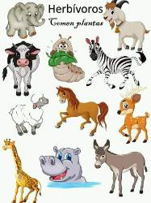

Los animales herbívoros son aquellos que se alimentan exclusivamente de plantas y materia vegetal. Estos animales juegan un papel crucial en el ecosistema, ya que ayudan a dispersar semillas y a mantener el equilibrio de la vegetación. Algunos ejemplos de animales herbívoros son los rumiantes, como vacas, ovejas y cabras, que tienen un sistema digestivo especializado para descomponer la celulosa de las plantas. Otros ejemplos son los roedores, como conejos y ardillas, y los grandes herbívoros, como elefantes y rinocerontes. En general, los animales herbívoros son fundamentales para mantener la diversidad y el equilibrio de los ecosistemas terrestres.
